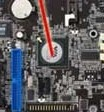

|  |
The southbridge is an IC on the motherboard responsible for the hard drive controller, I/O controller and integrated hardware. Integrated hardware can include the sound card and video card if on the motherboard, USB, PCI, ISA, IDE, BIOS, and Ethernet. The southbridge gets its name for commonly being South of the PCI bus. Below is a graphic illustration of the ASUS P5AD2-E motherboard with explanations of each of the major components including the southbridge. It is common for the northbridge and southbridge to have a heat sink. Also, the northbridge is usually slightly larger than the southbridge. A southbridge chipset handled many of a computer's I/O functions, such as USB, audio, the system BIOS, the ISA bus or the LPC bus, the low speed PCI/PCIe bus, the IOAPIC interrupt controller, the SATA storage, the historical PATA storage, and the NVMe storage. Different combinations of Southbridge and Northbridge chips are possible, but these two kinds of chips must be designed to work together; there is no industry-wide standard for interoperability between different core logic chipset designs. In 1990s and early 2000s, the interface between a northbridge and southbridge was the PCI bus. The main bridging interfaces used now are DMI (Intel) and UMI (AMD). |